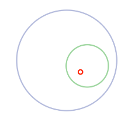
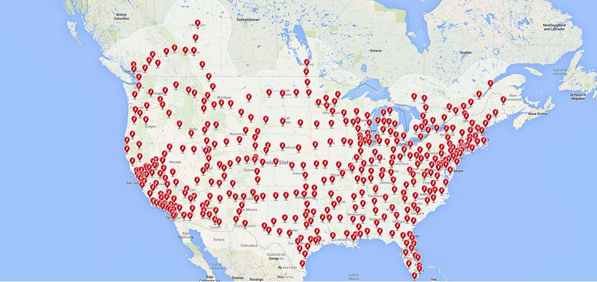
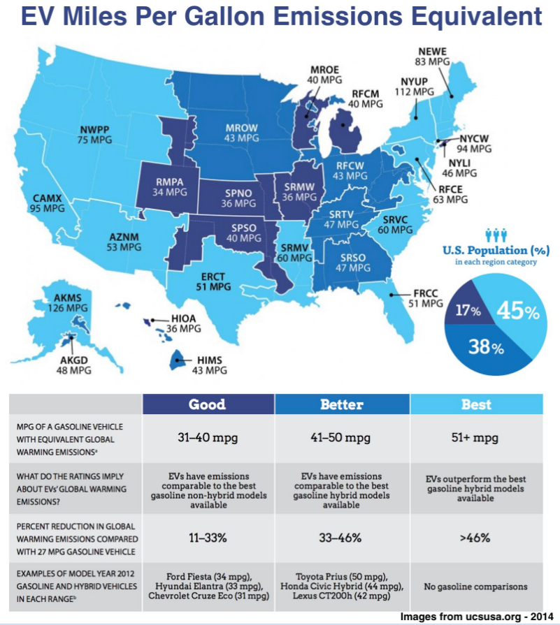

前面两篇文章我们从大背景能量的故事开始讲起，而后简单的介绍了汽车的发展历史，今天这篇是系列文章的最后一篇，总算介绍到了我们的主角特斯拉了，让我们看一看特斯拉到底是如何改变世界的吧。
能量的故事
汽车的故事
特斯拉的故事

在开讲特斯拉的故事之前，我们先来一起探讨一下什么是电动汽车以及电动汽车的基本运行原理。
我们现在说到的新能源汽车一般有混合动力汽车，插电式混合动力汽车和电动车这三种。另外还有一种不太常见的新能源汽车是以氢气为燃料的，我们就简单的称之为氢气车。这些新能源汽车都有一个共同点就是它们都有电动机。
电动机基于工作方式的不同，有交流电动机和直流电动机，相信大多数人都不愿意看一堆枯燥的文字来弄清楚什么是交流电动机什么是直流电动机，其实电动机的基本工作原理就像下面这个图片所展示的一样，外面不动的部分我们称之为定子，里面会转动的部分我们称之为转子，当接上电之后，转子就会不停的旋转，那么再把转动的轴接到轮胎上汽车就能跑起来了。
下面是几种不同新能源汽车的区别：
混合动力车，比如丰田的Prius，同时拥有内燃机和电动机。这种混合动力车我们不会通过燃烧汽油给电池充电。这种车的电池通过一种叫作再生制动或反馈制动的装置进行充电。我们都知道汽车在运用时所需要的动能是通过内燃机或电动机产生的能量转换而来，而在汽车制动时，这部分能量往往转换成热能，通过这种再生制动装置可以实现将制动时的能量重新转换成电能充回电池。通过这种类似于能量回收的方法，可以有效的降低汽车的油耗和废气排放，可以说混合动力车的出现是人类在新能源汽车上迈出的一大步。
但是这仅仅是帮助降低碳排放的一种方法，距离我们要真正的完全解决排放问题还很远，因为这种汽车仍然需要燃油。就算全世界100%的汽车都是丰田的Prius，对油的依赖仍然是100%。
插电式混合动力车，比如雪佛兰的Volt，本田雅阁插电式混合动力车，福特的Fusion Energi，是一种相比上面的普通混合动力车更好的选择。人们可以在家里给电池充电，然后依靠纯电力行驶10到40英里左右之后才需要内燃机的介入。虽然纯电力的行驶距离不远，但是也能满足一部分人日常出行或是通勤的需求了，意味着有些人几乎可以不使用燃油。既然我们都可以做到纯电力的方式，我们为什么不改进它让它可以行驶得更远呢？
氢气车，这其实是一种纯电动车，但是它不需要使用电池。而是像燃油车一样需要燃料，只不过这种车的燃料是压缩氢，通过和氧气反应产生能量转换成电能给汽车提供动力，这种反应不会产生废气，因为氢气和氧气的化合物是干净的水，听上去非常不错是吧？
但是马斯克一直不能理解为什么有人会认为氢气车是一个好的选择，尽管目前好多的大型汽车公司比如本田，通用都在氢气车的研制上投入了大量的资金。为了弄清楚这种观点上的不同，我阅读了多篇相关文章，有支持氢气车的也有反对氢气车的，最后我也看不出氢气车会比电动车有更好的前景。下面是一点详细的分析 ：
相比电动车氢气车主要有以下几点不足：
1) 氢气仍然需要从天燃气或别的化石燃料中提取氢气，而电动车的电力来源可以随着发电方式更加清洁而变得越来越清洁。
2) 具体到能量利用，行驶距离和成本，氢气车由于一些客观的燃料容易的限制或许可以达到目前的汽车的水平，但是电动车随着电池技术的提高，未来的发展空间将会更大。
3) 氢气是一种极不稳定的气体，其使用的危险程度比在家里插个插头就能充电的电动车要高很多数量级。
4) 当大家都在自家车库给汽车充电的时候，你还要去加油站充氢气显得多么的老土。
当我在和马斯克进行的电邮交流中，关于氢气车和电动车他也提到说：
如果我们把电力从太阳能电池板里提取出来给电池充电，这样的效率可以高达90%，既简单又便宜。然而如果我们通过电力分解水成氧气和氢气，然后还要疯狂的压缩氢气甚至使其液化，然后把他充到汽车的储存罐里，最后和氧气反应来发生电力，这当中幸运的话可以达到20%的效率，又贵，又复杂，效率又低。能量在复杂步骤的每一步都有流失。燃料电池的成本确实是高，但这只是它诸多不足当中的一点。如果燃料电池比锂电池好的话，那么我们早就在卫星上使用了，而事实上并不是。
如果这些还不足以说服我为什么氢气车不如电动车的话，唯一的原因或许就是为什么还有这么多企业投入大量的资金在研究氢气车。
最后再来看纯电动车，比如尼桑的Leaf，宝马的i3，福特福克斯电动车，以及特斯拉的Model S。这些车的原理很简单，都有一个大容量的电池，我们需要做的就是给电池充电，而不需要添加别的任何的燃料。
现如今，电动车有着很重要的意义，让我们来看一看相比传统燃油发动机电动机的哪些优点吧。
电动机在很多方面都比燃油机方便。燃油车每隔一段时间就必须去加油站加油，而电动车主每天只需要像给手机充电一样的给汽车充电就可以了。而在内部结构上燃油机比电动机要复杂许多，燃油机有超过200个部件，而电动机不到10个。燃油车需要有变速器，排气管，齿轮等复杂装置，而电动车不需要，打开电动车的引擎盖，你得到的是一个很大的储物空间。在结构上的复杂意味着燃油车所需要的维护和保养成本要远高于电动车。
电动机的养护和使用成本要远远低于燃油机。除了燃油车的燃料汽油要比电动车的”燃料”电要贵很多以外，燃油车主还不得不花费相当的资金在更换机油和汽车保养上，让我们来简单的算一算。
电动车平均每度电可以行驶3英里，在美国平均的电价是12美分一度，那么意味着每英里的驾驶成本是4美分。燃油车的驾驶成本相对就要难算一点，因为油价会一直变化而不同车型的油耗也存在较大的差异。让我们假设在油价最便宜的时候比如是1.4美元每加仑，那么要达到4美分一英里的驾驶成本，我们需要每加仑可以行驶35英里，几乎很少有车可以达到这个油耗。那么我们常规的来看如果油价是4美元一加仑，油耗是每加仑15英里，那么每英里的成本 是27美分。如果一年行驶1.2万英里的话，燃油车每年要比电动车多花费3000美元。
燃油机是导致能源和气候问题的两大原因之一。之前在能源的故事中我们已经看到，交通所消耗的石油占了世界碳排放的三分之一，污染了很多城市，同时石油也使得一些的多家过多的依赖于别的国家。虽然目前电力还有很大部分来源于对于化石燃料的使用，看上去源头也并不清洁，但是我们一直在改变，终有一天会用上清洁的电能。
但是自从100年前电动机诞生以来，一直存在着一些阻碍其进入人们日常生活的缺陷，而当电动车被燃油车挤出市场之后，人们在电动车改进上所投入的精力和资金也越来越少，电动车是否可行主要取决于以下三个问题能否得到解决。
1)行驶里程问题。这是三个问题中最亟需解决的问题。
A) 电池的容量是否太小，寿命是否太短，以至于无法支持长距离的行驶？
B) 如果驾驶着电动车在路上没电了，是否可以方便的找到充电的地方？
C) 即使找到了充电的地方，是否需要好几个小时来等待汽车充好?
这些问题都是潜在的电动车购买者所关心的最主要问题。
2)效率问题。目前最常见的电动车大概是在高尔夫球场上的摆渡车，驾驶起来比较平稳或者说平淡。事实上没有人希望自己的车开起来太肉，当人们想到加速的时候，心里总是会和轰轰的燃油发动机声音联想在一起而不是吱吱的电动机。
3)价格问题。在一开始的时候，电动车就比燃油车要贵，主要是贵在电池成本上。早在1910年的时候，人们就意识到了上述的电动车的问题，那时候燃油车同样存在着很多的缺陷，但是福特对燃油做作出了巨大的改进，而没有人对电动车进行类似的改进。
我曾经也问过马斯克对福特怎么看，他说，福特所擅长的并不是解决问题而是绕过问题，而他事实上也是这么做的，他能够专注于挖掘客户的需求即使是客户自己都不是很清楚自己的真正需求是什么。
当2003年马斯克开始把他关于电动车的设想付诸实施的时候，摆在他面前的是一系列的难题需要解决。有近一个世纪阻止了许多新兴公司进入的汽车行业的高门槛；有社会对碳排放的默许，这就像是在打一场对手可以犯规但都不会受到惩罚的篮球比赛一样；有背后的庞大的石油工业的利益集团，会不择手段的对付阻碍他们继续不断发财的一切；除了这些以外，电动车的创新和改进在一个世纪前身燃油车认输之后基本暂停，这将是一个艰巨而昂贵的追赶过程，上面列举的三个问题依然亟需解决。
那么，首要的问题是，电动车之所以没有普及是因为真的存在无法解决的问题吗？还是说电动车领域还没有出现一个类似当年亨利福特这样的人呢？
一般都觉得硅谷不会汽车公司不会诞生在硅谷，而硅谷的创业公司也不会想要做汽车生意。
不过电车车行业毕竟不是老爷车行业，在上世纪90年代加州的零排放政策出台期间，新型电动车曾经短暂的在市场上冒过泡，但不久之后随着零排放政策的废止也很快消逝了，电动车行业随之枯萎，被人们遗忘在那些汽车极客们的车库或是实验室里。但是这段时间在加州硅谷的极客实验室里诞生了一些尖端的科技公司比如微软，苹果，谷歌，为什么没有一家现代化的电动车公司可以崛起呢？
有一家小型的汽车公司AC Propulsion，当底特律，东京，慕尼黑的汽车巨头们还没有明显的意识到电动车是未来必然的趋势时，这家小公司已经默默的在电动车的研发上实现了一个又一个技术突破。
上周，我冷不丁的给AC Propulsion的CTO Paul Carosa打了个电话，他很礼貌的接听了电话，并且给我介绍了从上世纪90年代一直到本世纪初这些年他们所建造的前卫的汽车t-zero。t-zero零到百公里的的加速时间仅需4.9秒，作为电动车来说这是不可思议的，已经能和最快的跑车相媲美。
此外t-zero在电池技术上也取得了很大的创新和突破。以往的电动车使用的是铅酸电池，这种电池容量有限而且沉重。AC Propulsion公司意识到随着笔记本电脑和大屏幕智能手机的发展，制作小型18650锂电池的效率越来越高，这种电池有很好的优点。18650锂电池看起来就像AA电池，对于一辆车来说，一两节这样的电池提供的能量不算什么，但是如果把上千节电池联接起来，所产生的能量足以驱动我们的汽车，这也就成为了目前为止最好的电动车电池了。在此之前电动车的行驶里程一般局限在60到80英里，最多也就120英里左右，而t-zero可以一次充电行驶250英里。
2003年，加州的一个名叫JB Straubel的工程师摆弄着自己的电动车，他希望马斯克可以给他的电力车项目提供资金。此后的不久，Straubel带马斯克到AC Propulsion公司参观了t-zero电动车，可以说这一次的参观马斯克被惊到了，多年以来他一直在思考人类汽车的未来，而现在，在他眼前出现了实实在在的可行的电动汽车，因此他对于电动车的未来更加确信了。
那个时候，马斯克的工作重心已经在运营SpaceX上，正在想方设法的让人类早日登陆火星，所以重新运作一家汽车公司貌似已经挤不进他的日程里了。但是他迫切的想让全世界看到t-zero，因为他相信这样的电动车一定会给人们留下深刻的印象的，也会给电动车行业形成积极的影响。因此他试着说服AC Propulsion公司的伙计们在他的资金帮助下把t-zero投入市场，但是被AC Propulsion公司拒绝了，同时AC Propulsion把马斯克介绍给了被他们拒绝的另外三个有同样想法的企业家，这当中包括Martin Eberhard和Marc Tarpenning。于是他们想了个办法让AC Propulsion自己以一家名叫作特斯拉汽车的公司把他们的技术和产品推向市场。基于马斯克在业界的影响力和他大部分精力还得花在SpaceX的运营上，因此这家新的公司任命Eberhard为CEO，马斯克为主席。自此特斯拉开始出现在人们的视野中了。
成立之初特斯拉需要考虑的第一个问题就是如何才能成为一个成功的汽车公司。摆在管理团队面前的第一个问题就是对于这种新技术的开发势必需要投入大量的研发成本，那么早期推出的产品的价格就会相对比较昂贵。这也正是一开始电脑和手机的价格都比较高不是一般老百姓能承受的起的原因，但和电脑与手机不同的是电动车并不是以独立的新事物推出到市场的，市场上已经有看似完美且比较经济的燃油车，所以让消费者在两万美元的燃油车和高过十万美元的电动车之间选择的话电动车必然败下阵来。所以特斯拉拟定了如下三步走的商业计划：
第一步：针对特别有钱的人推出少量昂贵的电动车。推出这种昂贵的车型就一定得让有钱人觉得物有所值。比如让这种电动车在性能上可以和法拉利竞争，那么十万美元的价格就不是问题了。
第二步：针对相对富裕的人推出适量的价格也相对合理的电动车。通过在第一步中赚取的利润来投入到这第二步的发展中。这种车的竞争对手主要是奔驰或宝马这个级别的豪车而不是上面提到的法拉利，价格在7.5万美金左右。
第三步：针对普通消费人群推出大量廉价的电动车。通过第二步中赚取的利润来发展第三步。对于普通中产阶级来说这种在享受了政府补贴之后价格在3.5万美金的电动车是完全可以接受的。
可见特斯拉的首要任务并不是要成为一个世界上最大的电动车汽车公司。他着眼于解决电动车的历史遗留问题和提高电动车的效率，从而改变人们对电动车的传统的局限的认知，进而倒逼其它的大型汽车厂商也开始研发各自的电动车。所以特斯拉的最终使命是尽快的将引人注目的电动车推向市场以尽可能的加快可持续的清洁交通的发展。换句话说，电动车是趋势，电动车的时代迟早要来的，而特斯拉所做就就是让其来得更快更早。更快更早这一点很重要，因为这就意味着人们可以更快的开始降低碳排放以更好的减少对未来的影响。
事实证明这个商业计划是可行的，在四后之后，特斯拉实现了第一步，推出的车型是Roadster：
特斯拉一开始就没有打算把Roadster作为一款长久发展的车型，一位来自特斯拉的员工告诉我，马斯克从一开始就确保每一名员工都清楚特斯拉的最终使命，我们要做的并不是有钱人的玩具，而是要让世界真正的知道电动车所能处和接受电动车，同时这款车也要能赚到钱可以投入到商业计划的第二步中去。因此对于这一款车，特斯拉并没有从头开始设计外观，而是参考了莲花Elise车样子进行建造的。
当然Roadster也并没有改变世界，一款价格在11万美元的车当然也无法被世界上大多数人接受。但是它给汽车行业敲响了警钟，特斯拉真的可以引发电动车的革命。作为普通人你可以不知道Roadster在2006年的时候就发布了，并在2008年正式出货，但是主流的汽车厂商可以一直在注视着它。尼桑不久就推出了自己的纯电动车Leaf，而此后通用也推出了插电式混合动力车雪佛兰Volt。
但是作为第一款车必然存在着一些问题，生产这种车的耗时很长，成本也比之前预计的要高很多，已经出货的产品也存在着这样或那样的问题。这让马斯克感到不太爽，于是他和董事会解雇了CEO Eberhard。不过这还不算什么，紧接着是2008年的全球经济危机的到来，这让整个行业都陷入了阴霾，特斯拉作为一家还没有品牌知名度也没有怎么盈利的公司受到的冲击也尤其严重，这一时斯是特斯拉最艰难的时期。
马斯克聘请了另外一个CEO，但是这一年里，一直到2008年底，整个公司都处在要死不死的状态，马斯克最后实在看不下去了，亲自接任了CEO，像打了鸡血似的努力让公司挺过去。与此同时SpaceX的处境也是差不多的，于是，那时马斯克的生活就像这样子：
幸好在此之前特斯拉已经给很多人留下了深刻的印象，这也给它带来了新的投资，让公司在最艰难的时候可以继续运作下去，此时特斯拉看上去已经是一个全新的公司了。由马斯克自己担任CEO，由汽车行业的重头人物汽车设计的明星人物曾经担任过通用汽车和马自达的设计总监的Franz von Holzhause担任特斯拉的首席设计官。
几周之前，当我踏进特斯拉的设计工作室，我多么渴望见到这位传奇人物Holzhause，以及他可以用他那浓重的德国口音给我介绍伟大的设计， 事实让我有点失望哈，他看上去就像是一个很普通的美国人。在工作室里，Holzhausen给我展示了为即将推出的Model 3汽车的两种设计做测试用的全尺寸汽车模型，并给我解释了汽车设计中的严谨性，即使是四分之一毫米的微小差别也会给整辆车造成很大的影响。
我问Holzhausen是什么原因让他选择离开自己工作多年且熟悉的成熟汽车行业而加入特斯拉时，他是这样回答的：像通用汽车这样的以财务为导向的公司，人们总是把重点放在财务数据上，而在这里，我们把目光都放在产品上，好的产品造就好的公司。(这一点和当天早些时候马斯克和我提到的当公司的人们都为了数字而活的时候这个公司就算完蛋了，当公司的CFO变成了CEO这个公司也差不多了的观点不谋而合)。Holzhausen接着说：另外一个区别就是在之前的公司里总是把工程师放在设计之前，设计师任务只是基于工程师的设计来让汽车变的更美观，而在这里设计师和工程师是平等的。现在Holzhausen已经完全习惯和喜欢现在这种自由的工作风格，要是让他再回到过去那样的工作，他会发疯的。
Holzhausen在特斯拉的第一个任务就是要设计出特斯拉商业计划第二步中的可以适应一般有钱人的电动车，称为Model S。之前的Roadster是基于已有设计的跳板型产品，而Model S将是特斯拉推出的第一款旗舰型产品，它将真正改变人们对电动车的认识。Holzhausen自豪的说：Model S可是我们完完全全从一张白纸开始设计的。这听上去和乔布斯在苹果所做的事情是惊人的相似。乔布斯总是痴迷于做“疯狂而伟大”的产品，并不在意其它公司在做什么，喜欢自己从源头上开始设计。当苹果决定制造手机的时候，他们并没有想要做一个比黑梅更好的手机，而是从新对自己发问，一个好的手机应该是什么样的呢？
一直以来，大公司为了规避风险总是很少创新，如果此时其它公司有自己的方式和手段来给行业带来一个全新的视角的话，那么摆在这种新公司面前的机会也是相当大的。iPhone的诞生给手机行业带来了全新的变革。那么Model S的诞生，我们丝毫不会因为99%的消费都认为这是见过最好的汽车而感至惊讶，这正如当年的iPhone一样，因为这是一个迈向未来15年的飞跃。
Model S是史上最快的四门轿车，0到而公里加速最快中需要3.2秒。它通过业界最低的风阴系数0.24来节省电池电量，一系列的工程创新使其拥有美国NHTSA安全测试评分最高的5.4星。Model S已经实现了自动驾驶，不久之后当你早上要出门的时候，你会发现你的Model S已经调节好了车内温度并播放着你喜爱的音乐在你门口等你了，而晚上回家，你也只需在门口下车，他自己会回到车库并开始充电。Model S升级并不像传统汽车那样更新换代，比如凯美瑞2014，凯美瑞2015，不用等到每年发布新版本的汽车。你今天所买的特斯拉或许和两周前的已经有些许不同了。通过自动的软件更新系统，特斯拉会持续的升级和更新自己，每一天醒来你都有可能发现你的爱车多了一点新的功能。
在很多情况下，特斯拉想要做的不只是局限于现有的技术条件和限制，他试图改变这些限制。由于特斯拉所采用的电池比较重，为了降低整车的重量，他们从SpaceX相用了火箭上的相关技术，使得特斯拉是北美唯一的由全铝合金打造的汽车。
在给汽车装上门把手之前，马斯克和Holzhausen已经花了很多的时间在汽车设计优化上了，当需要装门把手的时候，他们不想毁了之前的设计，于是他们考虑的是如何使门把手和现有的车门完美的结合。
他们不想通过经销商来销售汽车，想要完全由自己直销，但是这在很多州是不允许的，于是他们一个一个的攻克这些州，渐渐的使他们允许直销。
他们不想汽车里再有复杂的按钮，想要一个17寸的大的触摸屏来控制，但是当他们第一辆车问世的时候还没有iPad，也没有别的厂商可以提供这种17寸大屏，于是他们自己做了这样的大屏幕。
诸如此类的创新使得特斯拉成为一个出色的汽车。但是之前我们所提到的三个主要的缺陷问题仍然围绕在电动车的周围，AC Propulsion公司已经很好的改进了其中的两个，行驶效率和里程，特斯拉在此基础上做了进一步的改进和完善。行驶效率上文已经提到了，可以达到比一般跑车还快的加速度，而根据不同配置单次充电的行驶里程也可以达到208到270英里，这已经相当不错了。
但是仍然有两个严峻的问题摆在面前：
行驶在路上是否可以方便的充电？普通人是否都能买的起呢？
特斯拉如何解决旅途充电问题：
单次充电200英里以上的行驶里程基本上可以满足人们的日常出行需求，即使是比较忙碌的日子，一天开200英里也差不多够了，但是对于长途的驾驶需要到周边来个自驾游啥的就显的不太够了，普通燃油车可以在到处都有的加油站补充燃料，而电动车应该怎么办呢。我们来看看马斯克的计划。
构建全球能源网络。特斯拉提供超级充电桩，一种可以给电动汽车快速充电的装置，可以像加油站那样遍布在道路网络中。一般在自家车库中给Model S充电要5到10小时(取决于购买的车型)。很明显，没有人会希望在旅途中停下来这么多小时等待充电，一般燃油车只需要几分钟就可以补充燃油了。因此超级充电桩的充电速度比家里要快许多。对于Model S来说，使用超级充电桩充电10分钟可以行驶60英里。所以你是从波士顿驾车到纽约的话，差不多有215英里，不需要在路上进行充电，即便要充的话，10分钟肯定就够了。如果是从洛杉矶到旧金山的话，差不多有382英里，那么当中可能需要停下来充电20到30分钟。
事实上人们驾车从波士顿到纽约有四个小时的路程，当中很有可能会停下来几分钟休息休息，而从洛杉矶到旧金山的话有六七个小时在路上，则更加需要20-30分钟来整顿整顿，上上厕所，买点吃的什么的。
所以对于现在特斯拉的单次充电行驶量程来说已经不是什么严重的问题了。所需要做的就是在道路周边尽可能的多放一些超级充电桩，让给电动车充电和加油一样方便就可以了，我们来看一看目前美国超级充电桩的分布情况：
同时超级充电桩的建设正在以疯狂的速度推进，到今年(2016年)底会是下面这个样子：

事实上不光是在美国，超级充电桩在欧洲和亚洲也在以相同的速度覆盖和推广。
目前只有特斯拉的电动车可以使用超级充电桩，也可以特斯拉的电动车可以实现远距离的驾驶。但是今后马斯克的计划是其它电动车也可以使用它们。
关于超级弃电桩还有几点有意思的地方，就是他们完全是免费的，而且不久的将来他们将完全是通过太阳能发电的。难怪马斯克会开玩笑的即使哪天丧尸围城，特斯拉的车主也没什么好担心的，因为他们的车不需要依赖于现有的电网。这意味着你可以不用带钱而开着你的特斯拉走遍美国。
随着时间的推移我们会看到这些会很快的实现，毕竟特斯拉每年都有新的创新。例如，Roadster现在可以一次行驶350英里，所以驾驶这款车从洛杉矶到旧金山也不需要停下来充电，问题在于现在比它便宜的车型差不多也快可以达到这个行驶里程了。特斯拉还推出了更快的超级充电方式，就是电池更换。特斯拉车主只需要将车停在特定的矩形区域，地下就会有机器自动的更换电池，整个过程只需要90秒，花费大概是60到80美金，价格是比较高的，但是你起码可以选择用金钱换时间。
所以行驶里程的问题和旅途充电问题看上去已经或者马上会得到完美的解决了，那么特斯拉所面对的问题就只剩下一个了：
7.5美元一辆的车宝宝还是买不起呀~~
特斯拉Model S的起步价是69900美金，随着配置的不同价格会有所上升，如果你想要配齐那些特斯拉所有的先进功能的话，价格随随便便就会高于10万美金。
当然马斯克指出，美国还给购买类似特斯拉这种电动车的提供7500美金的免税政策，相当于7500补贴，同时每年在汽油的花费上可以省下2000美金，但即使是这样算下来，特斯拉的花费也不会低于5.5万美金，这在美国也使很多人望而却步。虽然特斯拉紧接着推出了第二款车Model X， 是一款鹰式开门的SUV，但是这仍然是上面提到的商业计划第二步的车型，并没有解决价格的问题。
在汽车行业里有个经验法则，就是价格每便宜5000美金差不多可以承受的人群就会增长一倍。那么如果特斯拉出的车可以比Models S便宜3.5万美金的话，面对的受众就可以连着翻七番，或者说是128倍，这意味着大多数人都可以买的起了。让我们再看一下之特斯拉先前按规定的商业计划：
可见第三步才是特斯拉最终想要实现的目标，而只有这个目标实现了，才能谈的上特斯拉改变了世界。
这款车型是Model 3，预计将在2017年发布。而且，在享受了免税补贴这后的价格会在2.75万到3.5万美金之间，如果再算上省下来的燃油费，成本只需要2万美金。但是如何实现呢？现在光是Model 3的电池成本就已经达到了2万美金，即使Model 3车型比Model S小，也不采用全铝合金车身，也不采用那些Model S所具有的高科技功能，单从电池成本看，售价3.5万美金也不太可能。
特斯拉如何解决价格问题：
大型问题召唤大型解决方案。为了解决旅途充电问题，特斯拉建起了超级充电桩组成的全球能源网络，现在为了解决价格问题，他们建造了下面这货：
马斯克给它起名为Gigafactory。是一个建在内华达州的五十亿锂电池工厂。这个工厂的能源完全自给自足，能源主要来自太阳能，风能和地热能，这个工厂雇佣了6500人。
目前全球锂电池的产量差不多是30GWh，且大多数是用在笔记本电脑和手机终端上。而这个Gigafactory每年生产的锂电池将超过每年全球的产量之和，也就是说它将直接使得全球锂电池的产量增加一倍。这会带来两大好处：
首先根据特斯拉的计划，他们的电动车出货量将达到每年50万辆，这会从根本上需要大量的锂电池。援引马斯克的说法：我们知道我们无法获取到足够的锂电池，除非我们建成了这个造血工厂，我们也知道没有其它人会建造这样的工厂。数据让需求显得十分的明显，为了给每年50万辆特斯拉提供电池，需要差不多30GWh的产量，也正好是现在一年的全球产量，如果没有Gigafactory的话，意味着要把全球所有的锂电池都用在特斯拉上才够。现在的设想是Gigafactory完全给特斯拉提供电池，如果随着日后其它汽车厂商陆续推出各家自己的电动车的话，这些汽车厂商或许也会建造自己的Gigafactoies。
其次，通过使的全球锂电池产量的翻倍，以及在锂电池行业持续的创新和改进，Gigafactory的作用会大大降低锂电池的成本。马斯克预计锂电池的价格至少会降低30%，实际上目前特斯拉已经可以生产出单次行驶里程在500英里的汽车，但是出于成本的考虑并没有投入生产，但是随着电池成本的降低，未来电动车的行驶里程也会随之提高。
我很确信，Model S是比较昂贵的车子里最好的，在推出的第一年，其销量就远超同级别的奔驰S级，宝马7系，雷克萨斯LS系列以及奥迪A8系列，因为这些车还都在传统的富人之间流行。当Model 3推出的时候，它将再一次领先于全行业。你今天可以不太了解或不怎么在乎特斯拉，但我取肯定，不久的将来人人都会知道Model 3。或许这也正是马斯克说他不需要给Model 3打广告的原因，因为他知道这根本没有必要。
市场会记录下特斯拉的辉煌。2010年六月特斯拉以2.26亿美元的市值IPO，成为美国自福特公司1956年IPO以来第一家上市的汽车公司，自那之后公司的市值一路飙升，七年后的今天其市值已经达到了310亿美元。这是一个什么样的概念？我们用下面这幅线形图来直观的看一下特斯拉和其它三家传统汽车企业的对比 ：
虽然目前来说特斯拉还没有成长为一棵参天大树，单从市值上看还不如那些传统的大型汽车企业，但是至少一个多世纪以来，这是我们第一次看到有如此生机勃勃的企业以闪电般的速度在向上穿。
连锁反应
如果你是一家传统的大型汽车厂商，数十年来安安份份也可以说是按部就班的生产着自己的汽车，每年呢也会在原有的基础上做一些轻微的改进，在你看来还有什么比特斯拉这样革命性的汽车问世更烦人的事情呢？
要知道，几乎没有哪家汽车厂商不知道电动车以及电动车所能带来的好处。在上世纪90年代加州的零排放政策限制下这些厂商都生产过电动车，但是随着禁令解除的那一刻，这些厂商立马回转枪头，继续摒弃电动车的开发，回到自己已经熟悉多年的燃油车的微小改进上，这在他们看来是自己的舒适区。
他们对电动车的态度是完全合理的：传统的燃油车经销商们可以通过维修发动机，机油过滤器等部件赚取大量的利润，而这些钱在电动车身上是赚不到的。
这些汽车公司在燃油车上面来来回回的捣鼓已经非常擅长了，他们可以每年都对车子做出一些小的改动来推出新的所谓升级换代的产品。而电动车对于他们来说是全新的领域，他们不知道如何生产一款好的电动车动力系统，也不知道如何在电池性能的提升上做的比特斯拉更好。像丰田和梅赛德斯的电动车的动力系统都是从特斯拉购买来的。因此要他们研发电动车真是要了老命了。
更重要的一点是全世界的人们还是主要倾向于购买燃油车，这一点一直没有改变。对于传统汽车的销售几乎已经不太需要太强的说服力了，毕竟人们已经接受了这么多年，只需要几个简单的电视广告，告诉人们是哪个品牌又推出了什么样的新车型就可以了。而电动车作为一个全新的事物，要人们接受它的话则需要很强的说服力，要不然很难让消费者接受。而要让市场接受电动车，所需要作的或许就像这一整篇文章一样从能源的角度开始一点点的解释清楚为什么说燃油车是一种肮脏的、不方便的和古板的旧时代的产物。这对于一年仍然可以销售出一千万台燃油车的市场是一件很不容易的事情。
所以有哪家汽车厂商会傻到自己来做以上一系列事情呢？都愿意跳过这些步骤先看看特斯拉做的怎么样吧。
在Holzhausen看来，他之前工作过的另外三家汽车厂商都已经局限在了自己现有的制造流程上了，局限在了燃油车的舒适区里，局限在了经销商的合作模式里，局限在了自己的历史里了。马斯克觉得这些公司缺乏的是胆量和创新:”大公司在做决策的时候往往容易畏首畏尾，他们总是希望在自己投入到一个新的项目之前已经有别人的成功经验可以借鉴。”
特斯拉的迅速发展壮大让这些传统的汽车厂商们也感受到了压力。早在2008年特斯拉刚推出Roadster的时候，市场上没有其它大公司的电动车。而现如今你可以看到福特，雪佛兰，尼桑，宝马，奔驰，大众，菲亚特，起亚，三菱都有了自己的电动车，这绝对不是巧合。
那么这些电动车怎么样呢？
这当中最值得注意的是尼桑在2010年推出的电动车型Leaf，这是近几年来销量最高的电动车(不过比他贵很多的特斯拉Model S已经在2015年超载了它)。Leaf的价格是3万美金，扣除免税补贴后只需要2.25万美金，单次充电的行驶里程是84英里。尼桑的CEO Carlos Ghosn一度是除特斯拉外汽车行业少有的极力推动电动车发展的人。他认为燃油车已经行驶在一个死胡同里了，面对这样市场电动车的销售将得到推进。比如人们会羡慕自己的邻居拥有一辆不需要加油的汽车而也给自己买一辆。
宝马的i3的销量排在Leaf和Model S之后。售价是4.3万美金(免税补贴后3.55万)，单次充电的行驶里程是81英里。宝马的CEO Norbert Reithofer带领宝马跳上了电动车发展的列车，他说：”我们应该着眼于未来的10年，15年，甚至20年，像宝马i3这样的车是必然趋势。”
除了上面这两款车之外另外已经找不出其它卖的好的电动车了。我也曾经问过马斯克关于Leaf和i3有什么看法。他说，Leaf和i3的行驶里程有点短，但是如果他们持续改进的话应该会有所提高。大众聘请了宝马的前CEO，看上去也开始看好电动车市场了，而通用也在积极的推出自己的电动车雪佛兰Bolt。另外还有些汽车公司看上去还没有特别看好电动车。梅赛德斯的CEO Dieter Zetsche说他并不看好电动车近期可以表现的很出色，他认为人们并不会在现阶段选择一款行驶里程短，充电时间长，或许还没有足够大的空间，关键是价格还高的电动车。日本最大的汽车厂商丰田和本田对电动车的发展也还持怀疑态度，而是把他们的未来放在了混合动力车和氢气车上。菲亚特的CEO Sergio Marchionne则相对反对电动车，甚至让大家不要购买他们的菲亚特 500e电动车，他们之所以生产这款车完全是因为基于政策的要求。
即使电动车是未来的趋势，它仍然有很长的路要走。到2015年1月的时候，全世界一共有74万辆电动车在路上行驶，相比每年总共可以卖出8千万辆的汽车以及全球逾十亿辆汽车的总数来说，电动车只占其中的百分之零点几，不过可以看到他的发展势头相当迅猛：
所以不论是我们真的处在了电动车革命的发展浪尖，还是仅仅是又一个电动车发展的泡沫，从上面的资料我们可以看出，整个汽车行业已经跃进了这个赌局。
我相信我们不久就能看到更多的信息了，因为目前来说还没有一个真正革命性的电动车产品，特斯拉目前的问题就是太贵了，大多数人负担不起，而其它的人们可以负担的起的电动车的行驶里程又太短了。我们需要有汽车出现在下面这幅图的第四象限。
尽管事实上美国人平均一天的驾驶里程只有37英里，80英里以上的行驶里程看上去是可以满足多数人的日常出行需求了。但人们是不太会买只能一次开80英里的汽车的，谁还没个长途旅行的需要呢？
特斯拉的计划就是要生产在第四象限的汽车，也就是他们将在2017年推出的Model 3。同时其它的一些汽车厂商尼桑，大众，通用也都宣称自己正在计划发布价格适合的，行驶里程较长的电动车。还不清楚这些公司的汽车是否会在第四象限，如果真的实现了的话，我想应该就不太有人愿意买之前的燃油车了吧。特斯拉将要提供的中产阶级可以承受的起的品质电动车，在下面的电动车和燃油车对比的利弊清单上貌似全是有利的。
价格合适的高品质长距离电动车相比燃油车的利：
* 更好的驱动。电动车的即时扭矩就像出膛的子弹一般。从你脚踩油门踏板到汽车起动之间没有任何的时间延迟。不需要变速箱，电动车的加速是线性的，这样的操作体验无法想象，这一切都是无声的安静的。
* 更方便。不需要停下来加油，不需要定期的保养，不需要更换机油。有更多的储物空间因为我们不需要发动机，发动机箱变成了前备箱。
* 更安全。由于没有引擎，整个车身的前面都可以做成缓冲区。这也正是为什么Model S在安全性评估上可以达到超高分的原因之一。
* 更经济。不需要燃油和不需要保养可以省下来很大一部分日常开销，不用担心汽油的涨价。
* 更健康。少了汽车尾气的排放，空气质量将得到显著提高。
* 大局上还避免了全球环境，经济和地缘政治的一些问题。
价格合适的高品质长距离电动车相比燃油车的弊：
* 喜欢驾驶手动档汽车并享受那种操作感的人要失望了。
* 每年或许有五天在远距离驾驶，那么每三个小时你或许就需要停下来充电半小时，而相对燃油车可能是每四个小时加油五分钟。如果你本来每开四小时就要休息30分钟的话这或许也不是什么大问题。
今天这样的电动车还没有普及。现在的电动车相比燃油车还有很多的弊端。但是可以看到接下来的几年，电动车会变得越来越便宜，行驶里程会越来越长，超级充电桩会建设的越来越多直到到处都有，充电时间也会越来越短。我深刻的相信燃油车的时代即将过去，电动车的时代正在到来 。
不爽的巨人
对于电动车带来的变革那些传统的汽车公司当然不怎么高兴，就像是一个在幼儿园的小朋友手里明明已经有一块蛋糕了，但是老师一定要让他们去吃边上放着的蔬菜。
那么石油公司对这场变革怎么办呢？
石油公司不能和传统的汽车公司一样忍受电动车的发展，汽车公司或许在短暂的阵痛之后还是可以跳上电动车发展的列车，而要是真的电动车已经普及了，那么石油公司基本上就快完蛋了。因为45%的石油都是被用在了现在的交通上，尤其在发达国家，比如美国71%的石油都是消耗在交通上，这当中大部分是汽车。
如果说汽车公司的父母让他们放弃蛋糕去吃蔬菜的话，那么石油公司父母则是让他们放弃蛋糕去吃刀片。对于汽车公司来说还可以稍微的抵抗一下，最后还是可以将就将就，毕竟蔬菜有利于健康嘛，但是对于石油公司来说这就是生和死的选择了。
这就是石油公司对电动车的看法，该死的刀片。石油公司作为超大型的产业，并不会轻易甘心，就算真的要死，死之前他们一定会尽力挣扎一翻。
我们已经看到过类似的经历，烟草企业曾经在大规模的反对浪潮中竭尽全力的存活下来，而现在石油公司已经开始这场战斗了，他们从让人们怀疑气候变暖是不是一个严重的事情开始。
通常情况下，在挣扎的企业都知道自己即将被排除在历史滚滚的车轮之外了，但是当下他们仍然可以赚钱，到历史完全抛弃他们的时间拖的越长，他们所能赚的钱就越多，同时政客们也会在当中起一些调和作用，终有一天他们无法再从中赚到钱，所以对于目前来说时间比金钱更宝贵。
要想继续存活的久远的方略总是差不多的，释放出一些烟雾弹来误导大众，让大家觉得反对他们就像反对自己一样。
最聪明的办法就是让公众看到有不同的科学家之间持有不同的观点，并在这些观点之前展开辩论。这样你就会看到97%的人会认为这是一个悬而未决的问题。
同样的方法在几十年前已经用过了，当时98%的科学家认为吸烟会导致肺癌，烟草公司则很长时间都让公众同时接受到有科学家认为吸烟和身体健康没有直接关系的观点。在一本名为《疑虑的商人》的书中就详细说明了那一代认为吸烟没啥问题的科学家现如今又成了说全球变暖没啥问题的人。
早在上世纪90年代加州推出零排放政策迫使汽车公司开始生产电动车的时候，石油公司就把这个看成是个肿瘤，一定要在它发展恶化前解决掉。于是不久就有另外的声音冒出来，一个所谓的“反加州公用事业职权滥用”的民间组织开始活动。这个组织到处活动反对加州对改进汽车工业所进行的相关投资和政策，甚至公然提出电动车对环境的好处值得质疑的观点。后来人们发现这个组织的发起和背后支持者正那些石油公司。果不其然，没多久政策就变了，电动车也随之从市场上消失了，对石油公司来说肿瘤被干掉了。
现在，一个新的肿瘤又出来了，马斯克的特斯拉给公众带来了全新的电动车，比之前任何的电动车都要先进和靠谱。政府的政策会破产，而对Modle S的追捧不会。不过，石油公司并不需要完全抵制电动车时代的到来，而只需要尽可以的延迟它的到来，越晚越好。而特斯拉的使命是“加速世界向可持续能源的转变”，而石油巨头的使命或许是“通过使人们认为电动车对环境的改进并没有想象的多来延迟人们完全接受电动车的时间”。

现在其实已经有一大堆质疑电动车的声音了，每当我听到有认为电动车并不是清洁的时候 ，我总是会再进一步研究一下反方的观点，看上去似乎的确有那么些许道理。比如有下面一些说法：
观点：电动车的电池是难处理的
事实：A)电动车所采用的锂电池是安全的和可降解的。B)这些电池是可回收的。C)电池会被持续不断的回收，对于二手车来说电池还依然有一定的价值，起码还可以作为原料。
观点：特斯拉的制造过程比生产Prius或其它汽车更不环保
事实：越贵的汽车其生产和制造工艺越复杂，其过程中所产生的能耗等环境影响也越大。可以说生产Prius比生产Golf更不环保，但是如果是同等价位的车来比较的话事实就不是这样的了。特斯拉并没有比同等价位的豪华车更不环保。
观点: 电动车会给现有电网带来巨大的负担。
事实：电网的设计总是基于最坏的情况作打算的，所以平常的负荷基本上是过载的。我们可以把全美国70%的车都换成电动车，对现有的电网也没有什么影响。而当越来越多的太阳能电板投入使用之后，带来的影响则会更小。
观点：特斯拉在电池里使用了大量的石墨，这给中国造成了很严重的污染。
事实：这里的内在逻辑是特斯拉在电池中使用了大量的石墨，中国是世界上最大的石油出口国，中国被严重的污染了，所以特斯拉的电池造成了中国的污染。不过我发现特斯拉所有的石墨主要来自于日本和波兰，每辆Model S平均需要100公斤的石墨，但是这100公斤石墨可以用10年，所以基本上这个数量和你每年烧烤几次的消耗量是差不多的。
除了这些观点以外，还有一个影响里最大的质疑就是长尾理论。
长尾理论远处不在。于是不喜欢电动车的人马上把这个理论用到了电动车上。那么什么是电动车的长尾理论呢。在这里援引Fox新闻主播Greg Gutfeld的话来说就是：“发展电动车的整个背后的原因都是骗人的，因为电主要来源于煤炭，有报告显示用电比直接用内燃机实际上带来的污染更严重。”
根据之前我们的能源结构图来看，这似乎是有道理的，让我们再回到能量的故事里用到的美国能源流：
在能量的故事中我们提到二氧化碳的两个主要来源是汽车燃烧的汽油和发电燃烧的煤炭。长尾理论认为电动车只不过是把原本烧油的排放转变成了烧煤的排放，因为煤炭是电力的主要来源，而且产生相同的能量煤炭的碳排放是油的1.5倍，所以从这个角度看电动车反而污染更大。
当我们和别人谈论电动车的时候，这个样的质疑相信会不断的被人提出来。
让我们以美国为例来看看为什么这样的观点是不对的。
1)美国的电力来源是混合的，并不是单一的煤炭。煤炭只占美国39%的电力来源，而且这个占比还在下降：
目前比煤炭清洁很多的天然气已经占了美国电力来源的四分之一，原子能以及其它可再生能源带来的电力也占了三分之一。
2)发电对能源的利用效率比内燃机要高出很多。让我们以理想的能源天然气为例，在发电过程中有60%的能量可以被转化为电力，丢失40%，而在内燃机中直接燃烧的话，只有25%会转化为动力。而且对于损失的热能的回收和利用大型发电厂肯定比一台汽车要做的更好。这种效率的差别意味着就算电力完全来源于煤炭，电动车所产生的碳排放和每加仑能跑30英里里燃油车相当，而大多数燃油车是做不到这一点的，所以电动车已经比普通燃油车更清洁了。
由于每个州的能源结构不尽相同，所以电动车在有些州相对来说就更清洁一些。美国的能源部门有一个很好的工具来分析不同地方电动车相对于燃油车的碳排放的减低效果。
有一些地方很少使用煤炭，比如纽约州，那么电动车的碳排放相比燃油车要少很多：
而在煤炭使用较多的科罗拉多州，电动车的碳排放相对就较多，但比普通燃油车还是要少一些：
整个美国的平均水平是电动车的碳排放是燃油车的61%左右：
关怀和科学家联盟想了一个可以直接比较不同汽车的碳排放量的指标，叫作”每加仑汽油同等燃料”，缩写是：MPGghg
MPGghg指的是要达到和电动车一样的碳排放标准，一辆燃油车需要达到的油耗是每加仑多少英里。比如我们说一个电动车达到了40 MPGghg意味着其碳排放和每加仑要跑40英里的燃油车相当。
一般来说现在的燃油车平均油耗在23MPG左右，如果可以达到30MPG是相当不错的，15或17以下则油耗太高了。之前我们假设所有的电力都来源于煤炭的话，电动车的碳排放指标是30 MPGghg，而如果完全使用天然气发电的话，碳排放指标是54 MPGghg
下图显示了美国不同州电动车的碳排放指标：

以看出即便是有17%的人们生活在用煤炭较多的州，电动车的碳排放还是比燃油车要少很多的。我们可以总结成下图：
现在的情况是每年中间这根蓝色的部分都在向右移动。因为我们的电网正一年比一年清洁，这就意味着电动车也是一年比一年更清洁，而传统的燃油车则已经止步不前了。
对火的掌握和利用使我们人类进入到了现代社会，到如今我们所依赖的能量还是来自燃烧。我们需要进步，我们需要让我们清楚的知道如何才能可持续的利用我们已经有的资源 。
我们可以设想将来的世界会是这样的
1)我们几乎所有的东西都基于电力运行。
2)所有的电力都来源于可再生能源。
这是一个基于干净的阳光和电力的世界，我们不再需要燃烧什么。
这样的转变会一步步的慢慢发生。在一开始的时候我们就意识到了两个重要的亟需解决的问题：1)发电量巨大且是脏的。2)交通需求巨大且是更脏的。
我们之后花了很大的篇幅来说明了第二个问题，直到最后我们看到了可以解决它的方法。
这里我们不具体的讨论第一个问题，不过可以看到的是越来越的清洁能源正在代替来本的化石燃料成为我们的电力来源，太阳能，地热能，原子能，风能，等等。相信不久的将来我看也可以看到我们的电力来源越来越干净。
人们或许还没有明显的意识到，现在家庭和企业已经可以选择可持续的能源方案。通过太阳城和特斯拉提供的太阳能发电装置可以完全支持日常生活和出行的电力需求。如果现代科技继续发展，直到所有人和企业甚至整个城市都可以不依赖于化石燃料，那么可以标志着我们现今所生活的时代可以结束了，可以一起拥抱新的未来了。